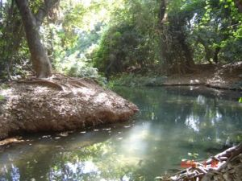

HAUTS-BASSINS


Située à proximité de l’Université de Nasso, à 15km de Bobo Dioulasso, la Guinguette est un site avec une rivière au milieu d’une végétation luxuriante. C’est un plan d’eau naturel formant une sorte de piscine sur le cours de la rivière de Kou.
Forêt très riche en végétation (trois strates) abritant plusieurs sources (dont trois en activité) naturelles alimentant la rivière. Connue de tous les habitants de Bobo et des touristes, la Guinguette doit son nom au premier classement de la forêt de Kou en 1942.
Lieu de repos des soldats français, elle fut nommée ainsi en référence aux petits établissements très prisés des parisiens et situés sur les bords de la Seine et de la Marne. La guinguette est un lieu relaxant, permettant de se ressourcer grâce à son air frais et naturel, les chants des oiseaux.
La GuinguetteSite de la Guinguette (principale source alimentant Bobo-Dioulasso en eau potable), a été classée en 2002. Le classement de la forêt interdit la baignade (premier facteur de pollution de l’eau et de destruction des berges) et l’exploitation forestière (appauvrissement du couvert végétal). Pour la baignade, un site a été aménagé avec goût à Dinderesso (plages et berges sablonneuses). L’arrêt de l’ancienne exploitation forestière appauvrissant leurs revenus, l’Union des femmes Yanta ( » Aller de l’avant « ), appuyé techniquement et financièrement par le projet BKF, bénéficie d’activités génératrices de revenus alternatives à la coupe de bois. L’activité principale est désormais l’exploitation de 600 hectares d’anacardiers de la forêt classée de Dinderesso et la transformation des noix de cajou » bio « . Le paiement de l’entrée du site alimente un fond d’aménagement pour l’entretien et la protection du site ainsi que la rémunération des villageois de Nasso (dont dépend la forêt) et des guides.
C’est un lieu parfait pour une détente ou une promenade. – Aménagement existant de banquettes d’un bureau d’accueil et d’une paillote servant de snack-bar ; – En raison du biotope rare, ce site est extrêmement fragile et toute exploitation doit accordée une priorité à la protection et à la sauvegarde du biotope dont la disparition entraînerait celle de son intérêt. Mauvaise nouvelle, l’accès est payant : 1000 Fcfa pour les touristes, 300 Fcfa pour les burkinabè. Si vous n’aimez pas payer pour aller vous baigner, vous pouvez toujours aller à la guinguette gratuite en rejoignant le pont et en redescendant la rivière sur à peu près 100 mètres, c’est pas mal aussi mais quand même moins agréable que le coin où on raque. Les 115 hectares de cette forêt sacrée sont entièrement clôturés